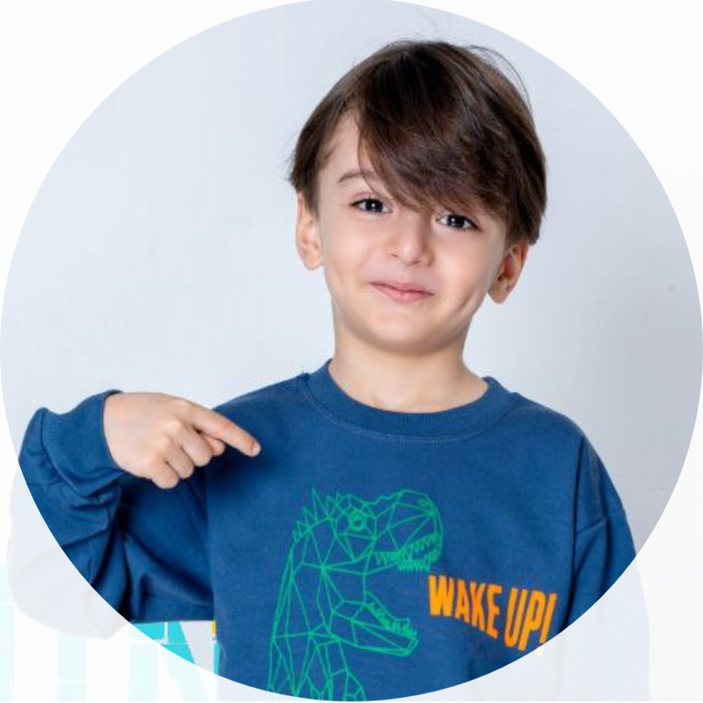

Official Actor • Official Website

سلام، من سام گیتیپسند هستم.
به وبسایت رسمی من خوش آمدید.
این وبسایت برای معرفی فعالیتها، آثار و راههای ارتباط با من طراحی شده است.
از همراهی شما سپاسگزارم.
Hello, I'm Sam Gitipasand.
Welcome to my official website.
This website was created to introduce my activities, projects, and ways to connect with me.
Thank you for visiting, and I hope you enjoy your time here.